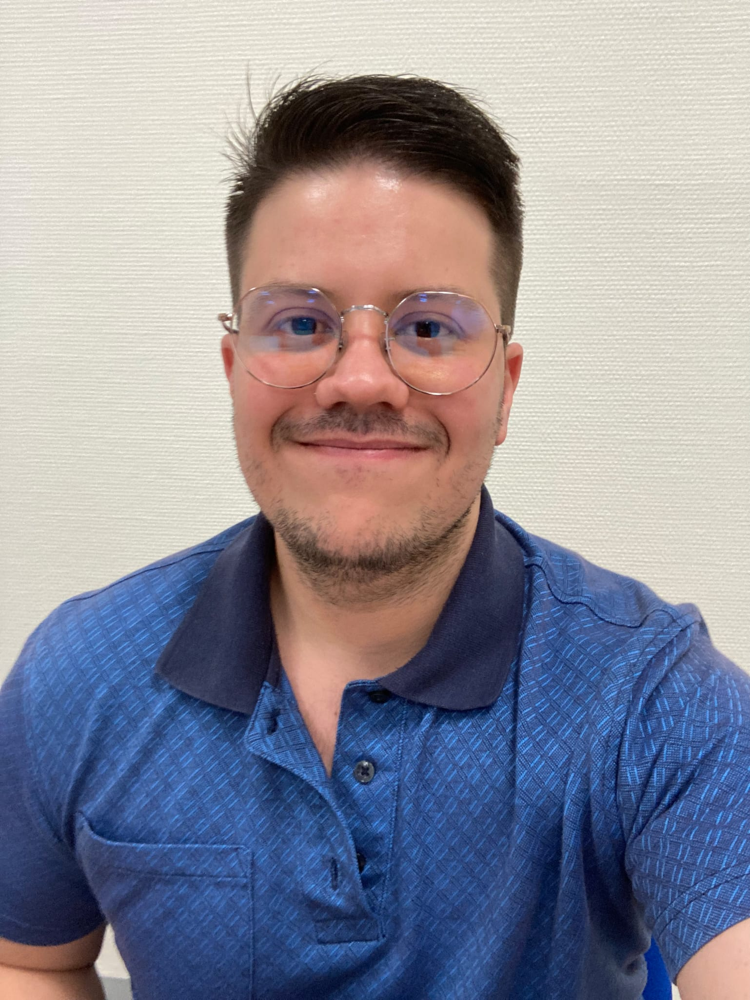

Antonio Samanna

Resume
Summary
My name is Antonio Samanna Costa, right now i am learning to be a Full Stack Web Developer, my objective is to reach a good formation in this area and change my professional direction to the Web Developer
I work in a technology consultant call it AdMairome, now i am a Superior Engineer of test on Validation and Verification for my client Indra, my work is to take the client requirements and create test from that requirements, once is processed al the data, we have to execute the test accord to the stipulated delivery dates.
Education
- I am a Telecommunications Engineer graduate from Catholic Andrés Bello University in Venezuela.
- I have two professional formation in Spain, the first one Technician of Micro informatic and the second one is for Technician of Departmental Networks.
- I did a python course in the "Tokio School" Academy and some courses when i worked in CTAG.
Work experience
- Superior Engineer of Validation and Verification on Indra mobility department.
- Validation and Verification engineer of Nertus Railway Maintenance and Siemens.
- Technician of Electronic Validation on CTAG.
Skills
- Manual Test Execution
- Test Creation
- Testlink
- DOORS requirements
- SAP requirements
- Enterprise Architect requirements
- Python language
- XML
- Linux bash
- Word
- Excel
Other